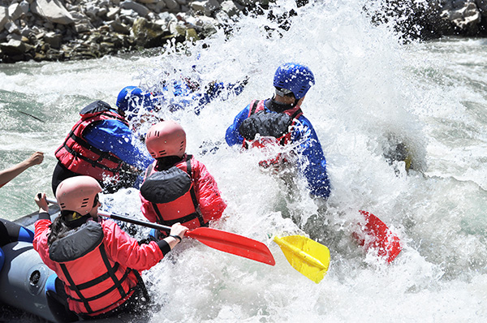
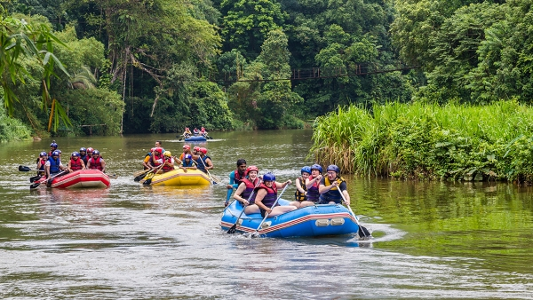

Há muitos anos, um grupo de amigos apaixonados por rios e montanhas decidiu transformar sua diversão em uma missão:

Levar outras pessoas para sentir a mesma emoção que eles sentiam ao descer corredeiras. Assim nasceu a Rafting & Natureza, uma empresa que acredita que cada descida é mais do que um passeio — é uma jornada de coragem, união e respeito pela natureza.


